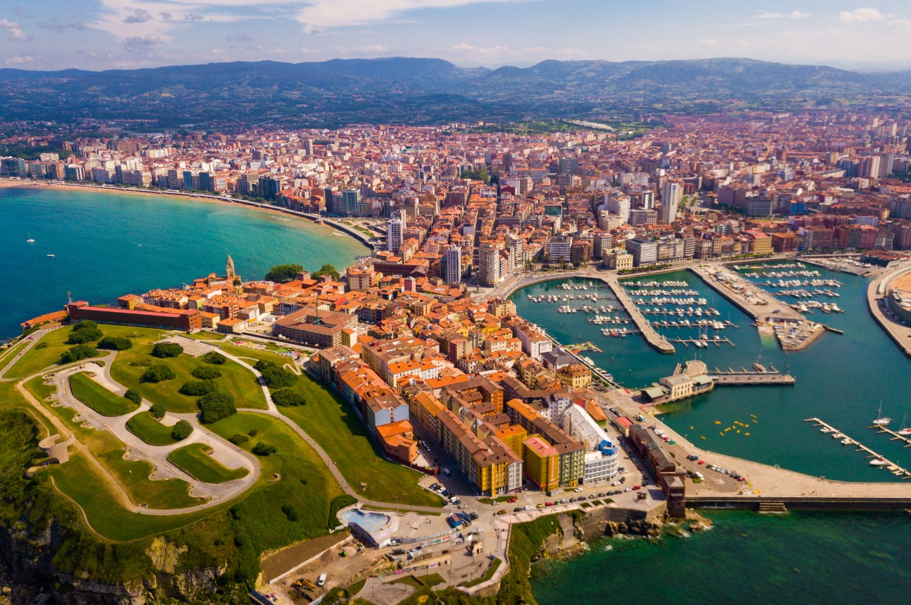
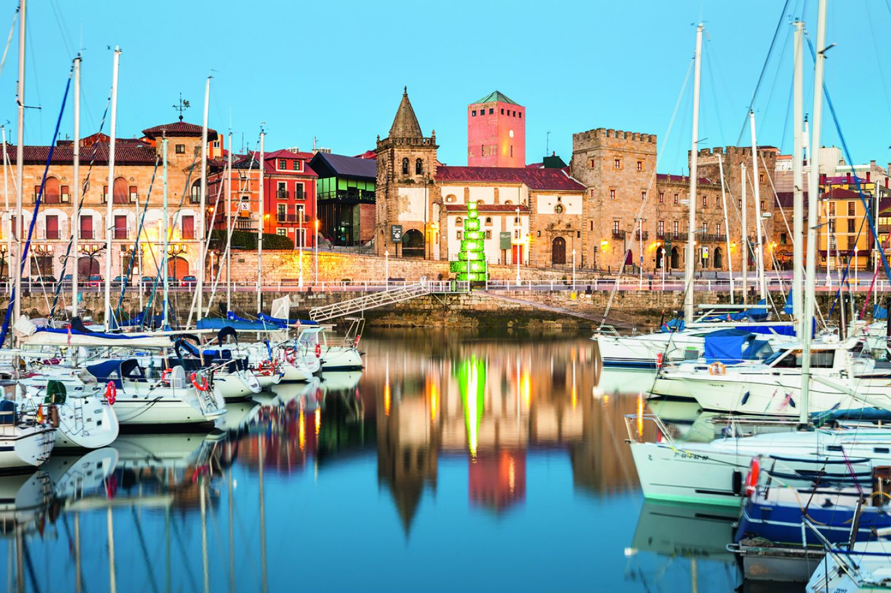
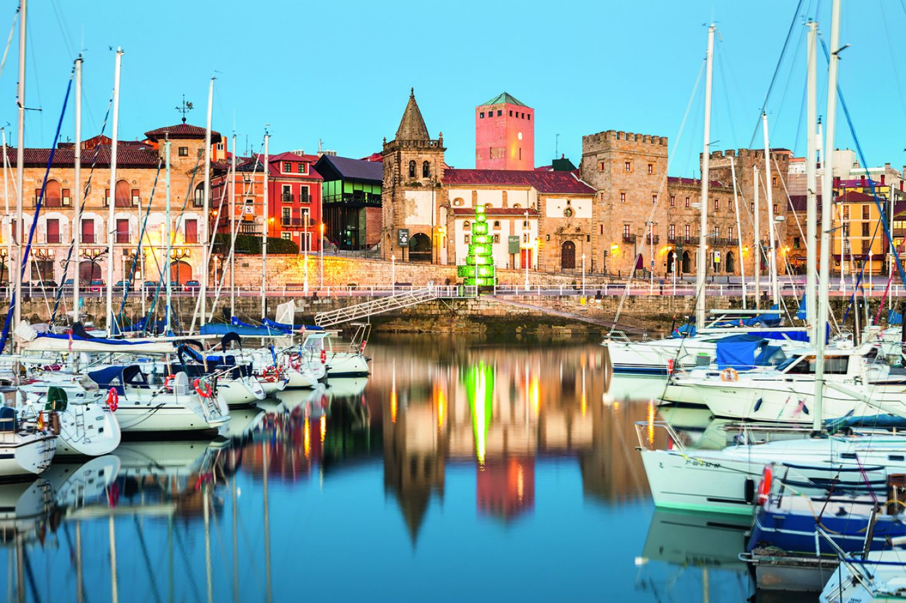

Link a la pagina de la universidad laboral:
Universidad Laboral
Gijon
Gijón Principado de Asturias (en asturiano Xixón) es una ciudad española con la categoría histórica de villa.Es el único núcleo de población de la parroquia del mismo nombre. Su concejo —denominación que reciben los municipios en el Principado de Asturias es el más poblado de la comunidad autónoma, con 267 706 habitantes en 2022.
 


Geográficamente, la ciudad y su término municipal se localizan junto a una bahía en la zona central de Asturias, a 28 km de Oviedo y 26 km de Avilés. Allí forman parte de una gran área metropolitana que abarca veinte concejos de la región. Esta área, vertebrada por una densa red de carreteras y ferrocarriles, contaba con una población de 835 053 habitantes en 2011, los cuales la convierten en la séptima de España. En la península ibérica, la villa y el concejo se sitúan en la parte central de la cornisa cantábrica y, a escala europea, en la zona sur del Arco Atlántico.
contar con una red municipal de museos, alberga la Milla del Conocimiento Margarita Salas. Esta comprende el complejo cultural de la Universidad Laboral, un campus universitario y un parque científico y tecnológico.
Geografía
Volver Al InicioGijón está situado en el centro de la costa cantábrica del Principado de Asturias, España, en el suroeste de Europa, al norte de la península ibérica, sobre una rasa litoral en las estribaciones de la cordillera Cantábrica. Forma parte de la vertiente hidrográfica cantábrica y se sitúa en su punto más alto (Pico Cima) a 737 m s. n. m.. El punto más alto de la zona urbana (Ceares) se sitúa a 59 m s. n. m.. El término municipal de Gijón tiene una superficie de 182,1 km² y una forma vagamente rectangular. La ciudad, que ocupa una superficie aproximada de 13,9 km², está situada en el tramo costero central del concejo, en una bahía dividida por el Cerro de Santa Catalina (Cimadevilla) que separa la playa de San Lorenzo al este, del Puerto Deportivo, playas de Poniente y Arbeyal, astilleros y puerto de El Musel, al oeste.
El término municipal de Gijón limita con los siguientes concejos: Carreño al noroeste, Corvera al oeste, Llanera al suroeste, Siero al sur y Villaviciosa al este. Con Sariego sus límites llegan a unirse en un pequeño punto correspondiente a la Peña de los Cuatro Jueces, así llamada por constituir la confluencia de los concejos de Gijón, Villaviciosa, Sariego y Siero.
Hidrografía
Gijón forma parte de la vertiente hidrográfica cantábrica. Los ríos más destacables del concejo son el río Aboño y el río Piles. El río Aboño es el de mayor tamaño y caudal. Nace en el Alto de la Miranda (Llanera) y desemboca en el límite entre el concejo de Gijón y el de Carreño formando así la ría de Aboño, fuertemente industrializada en las últimas décadas. Este río se encuentra embalsado a la altura de San Andrés de los Tacones, al oeste del concejo al lado de la autopista A-66, y sirve de abastecimiento de la empresa ArcelorMittal. El principal afluente del Aboño es el río Pinzales, de similar importancia hidrológica. El Pinzales nace en el concejo de Siero y atraviesa el concejo de Gijón de sur a norte. El río Piles, de gran importancia por atravesar parte del casco urbano de la ciudad, es un río corto y de caudal escaso cuyos 10 o 15 kilómetros transcurren íntegramente dentro de los límites del municipio, atravesando la parte este de la ciudad hasta desembocar en la playa de San Lorenzo. Existen otros arroyos menores (Peña Francia, Santurio, San Miguel, Tremañes, Cutis, Pilón, etc), de los cuales el más importante es el de La Ñora, que forma un tramo de la frontera con el concejo de Villaviciosa y desemboca en la playa del mismo nombre.
Clima
El clima de Gijón, determinado por la presencia del mar y la baja altitud del concejo, es un clima oceánico, con abundantes precipitaciones desde el otoño hasta los primeros días de la primavera, y un tiempo más estable y cálido en verano. Según los datos ofrecidos por la Agencia Estatal de Meteorología para la estación meteorológica de Gijón (período 1971-2000), la media del mes más frío (enero) fue de 8,9 °C, la media del mes más cálido (agosto) fue de 19,7 °C y la temperatura media anual es de 13,8 °C (media anual de máximas: 17,6 °C; media anual de mínimas: 9 °C).La nieve cubre ocasionalmente en el invierno los montes del concejo que rodean la ciudad y llega de forma esporádica al centro de la ciudad, con una media de un día de nieve anual.
La precipitación media anual es de 920 l/m². Ello se debe al denominado efecto de ladera, según el cual las lluvias más intensas se localizan en las zonas más altas y las mínimas en zonas costeras del centro y el occidente. Coincidiendo con la época de menos lluvias se dan situaciones de aridez y sequía (el 11 % de los meses hay aridez y el 9 % el déficit hídrico es grave).
| Mes | Ene. | Feb. | Mar. | Abr. | May. | Jun. | Jul. | Ago. | Sep. | Oct. | Nov. | Dic. | Anual |
| Temp. max. abs.(ºC) | 23.6 | 23 | 27 | 28 | 31.8 | 36.4 | 31.4 | 30 | 34.6 | 30.4 | 26.1 | 25 | 36.4 |
| Temp. max. media(ºC) | 13.1 | 13.8 | 14.9 | 15.6 | 17.8 | 20.2 | 22.4 | 23.2 | 21.8 | 19.0 | 15.6 | 14.0 | 17.6 |
| Temp. media(ºC) | 8.9 | 9.6 | 10.7 | 11.8 | 14.3 | 16.9 | 19.2 | 19.7 | 17.9 | 15.0 | 11.6 | 9.9 | 13.8 |
| Temp. min. media(ºC) | 4.7 | 5.4 | 6.6 | 8.1 | 10.9 | 13.6 | 16.0 | 16.2 | 14.1 | 11.0 | 7.6 | 5.8 | 10.0 |
| Temp. min. abs.(ºC) | -9.6 | -6.0 | -3.0 | -1.4 | 2.2 | 5.8 | 5.6 | 5.2 | 4.7 | 2.6 | -3.4 | -6.8 | -9.6 |
| Precipitacion total(mm) | 94 | 85 | 74 | 93 | 79 | 47 | 45 | 54 | 70 | 104 | 120 | 104 | 971 |
| Dias ded precipitaciones(≥1mm) | 12 | 11 | 10 | 12 | 11 | 7 | 6 | 7 | 8 | 11 | 12 | 12 | 121 |
| Horas de sol | 103 | 109 | 137 | 151 | 167 | 180 | 194 | 190 | 158 | 132 | 106 | 92 | 1721 |
Historia
Prehistoria
Volver Al InicioLos más antiguos testimonios de presencia humana en lo que hoy conocemos como concejo de Gijón datan del Mesolítico y consisten en instrumentos de piedra llamados «picos asturienses», hallados en la desembocadura del río Piles y en Tremañes. Estas herramientas permitían arrancar de las rocas moluscos como las lapas, los cuales formaban parte de la dieta de los primeros habitantes de la zona.
Más adelante, en el Neolítico, se construyeron en el Monte Deva una serie de túmulos (primitivos enterramientos) y en el Monte Areo un conjunto dolménico considerado como uno de los más importantes de la costa Cantábrica. En 1990, unas prospecciones arqueológicas permitieron sacar a la luz 30 dólmenes, repartidos en dos sectores diferentes: Los Llanos y Les Huelgues de San Pablo, que según algunos expertos están agrupados en un «cierto orden monumental». Sucesivas campañas arqueológicas han permitido el estudio de un túmulo en el área de San Pablo y otros dos en la zona de Los Llanos. De tipología diferenciada, dos de ellos presentan cámaras de planta rectangular y otro, trapezoidal con un pequeño corredor precediéndolo. Este último es un caso interesante, ya que no es frecuente encontrar dólmenes de corredor en el área del Cantábrico. Este conjunto dolménico está datado en el 5000 a. C. Estos monumentos megalíticos indicarían que en el actual concejo gijonés existía una importante población fija, que tenía como objetivo la demarcación del territorio que cada uno consideraba propio.
Edad Media y Moderna
Tras la romanización hay una época muy oscura que va desde el fin del control romano hasta la llegada de los musulmanes. De hecho, el paso a la época medieval está marcado por la pérdida progresiva de las funciones urbanas provocado por el colapso de la civilización romana. Las construcciones romanas son reaprovechadas para nuevas funciones. Así, se ha documentado el uso del complejo termal como lugar de habitación y de espacio funerario asociado a la iglesia de San Pedro, y en la zona rural del concejo la villa de Veranes fue reconvertida en iglesia y cementerio y la de Beloño en fortificación.
Gijón fue capital de los dominios transcantábricos musulmanes bajo mando del bereber Munuza, quien fijó aquí su residencia y puso destacamentos de tropas. También situó asentamientos militares en algún otro punto clave, pues un alto número de tropas habían cruzado el estrecho. El resto de la región, en cambio, gozó de mayor autonomía. La dominación duró aproximadamente desde el año 713 hasta el 718 o 722. En este último año se produjo la victoria de los dirigentes asturianos en la batalla de Covadonga, iniciada en el 718 y liderada por Pelayo, quien se convertirá en rey del reino de Asturias.
En el año 1147 un gran grupo de guerreros cruzados hicieron una parada en el puerto de Gijón. Habían salido de Dartmouth con el objetivo de conquistar Tierra Santa y fueron sorprendidos por un temporal en el mar Cantábrico. En un documento en el que cuentan estos hechos llaman a la ciudad Mala Rupis, que en latín significa «peña mala», tal vez por su aspecto poco accesible.